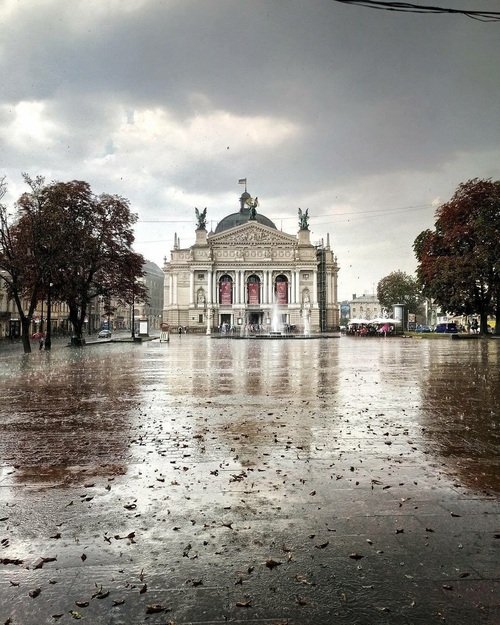
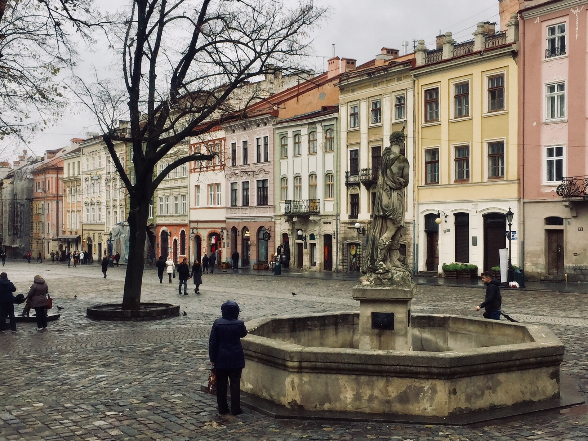
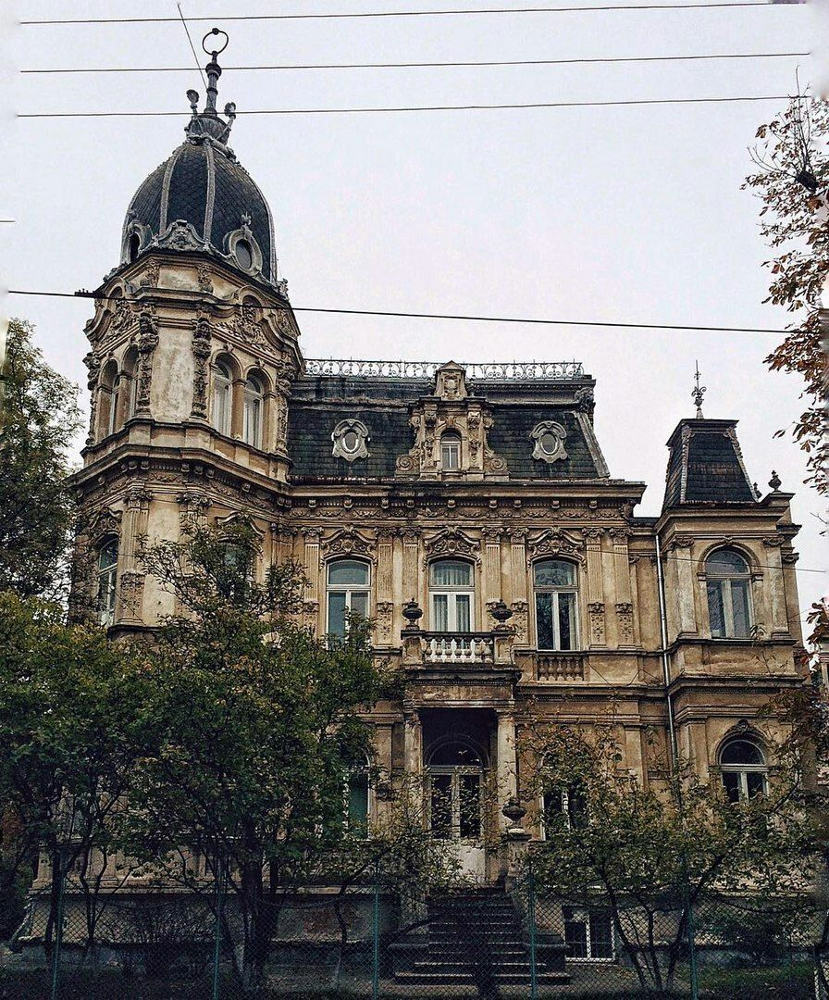
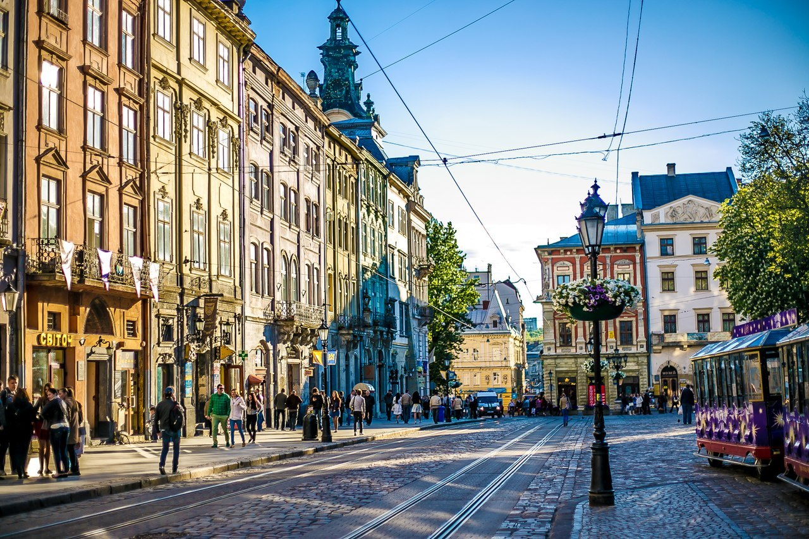
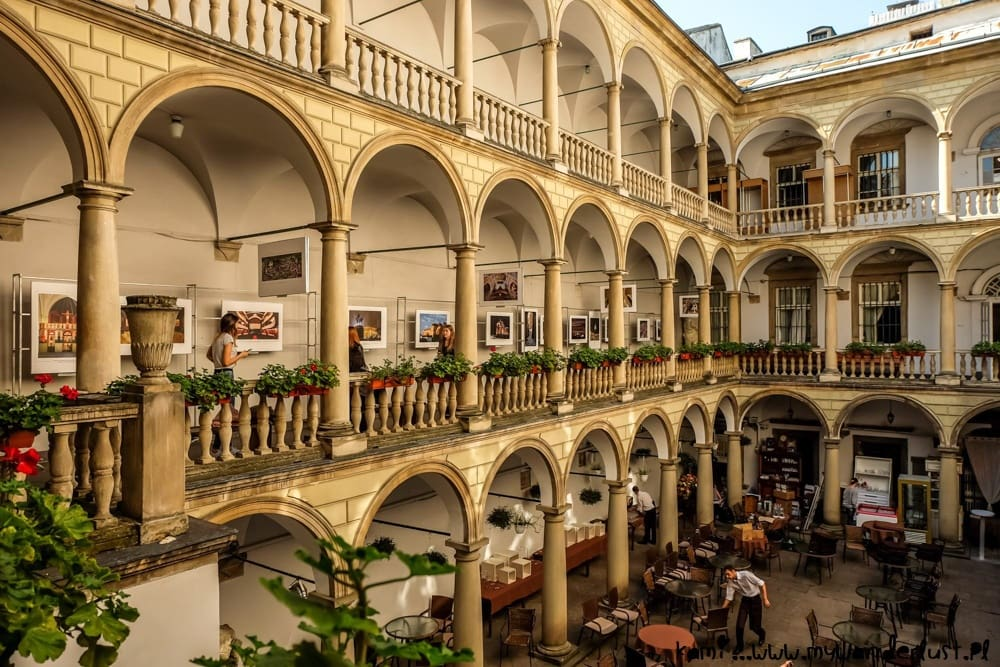
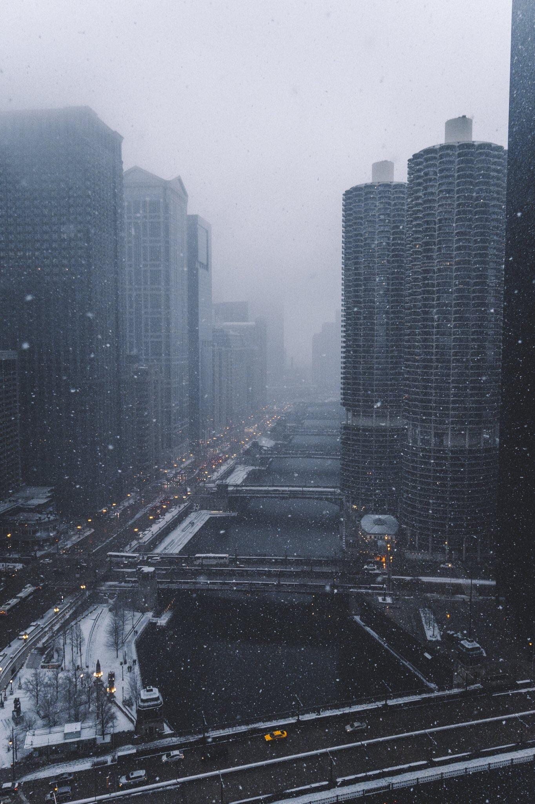
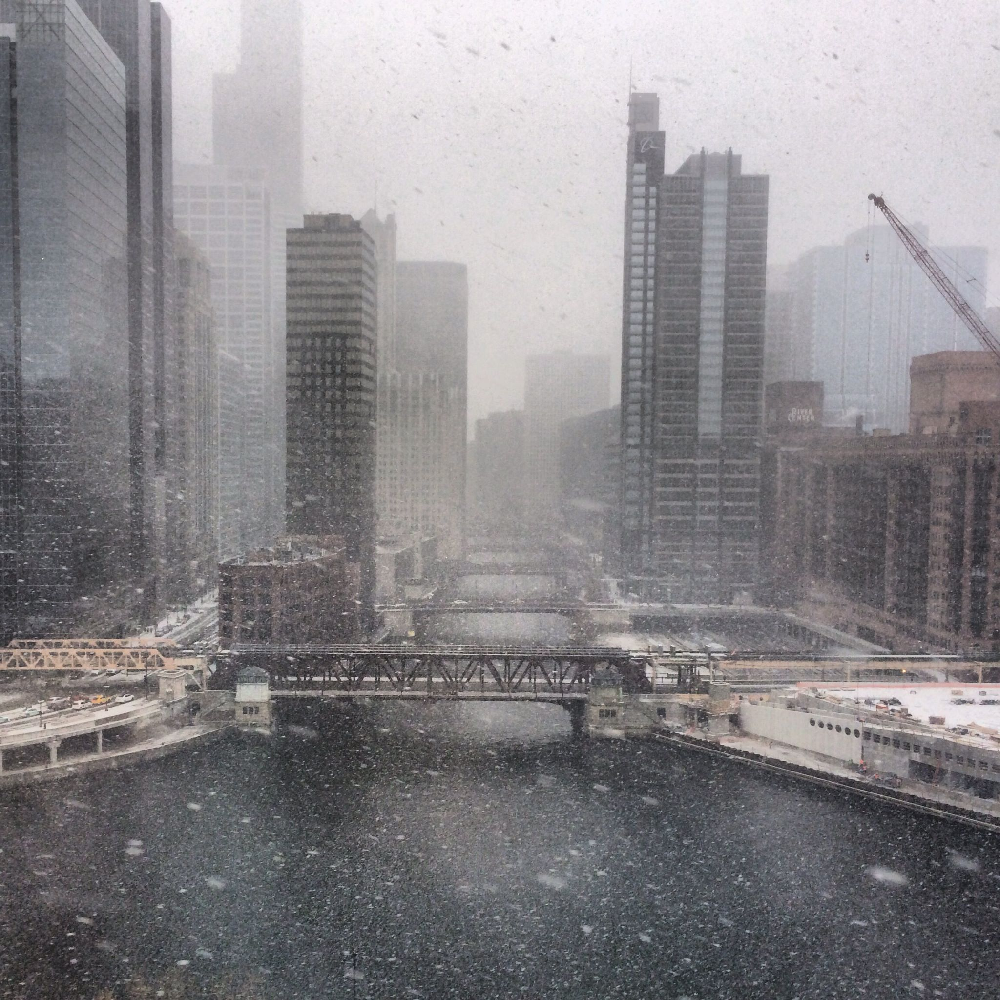
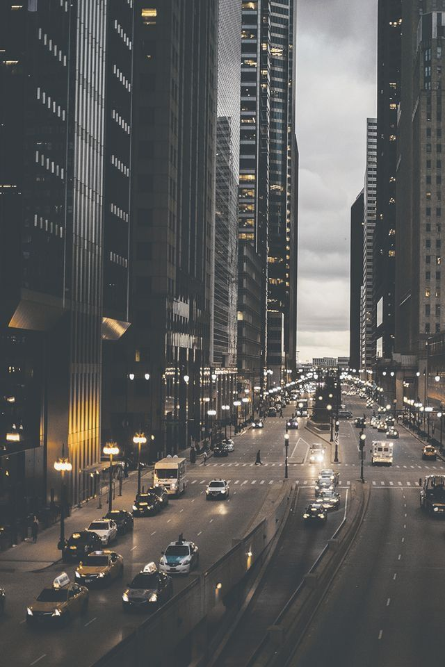
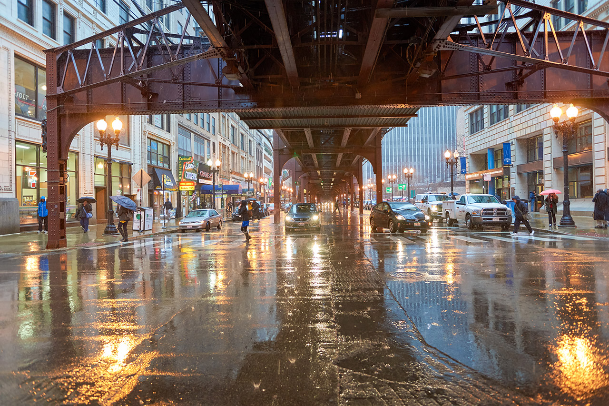
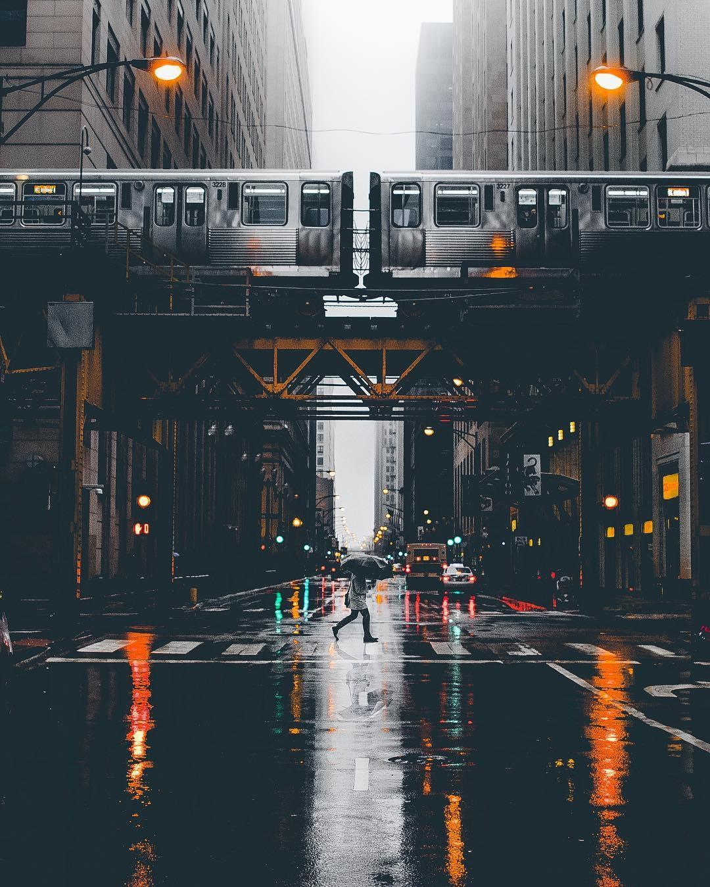

Favorite Things Ever.... Oh, there are so many...
///Let's start with some astetic feelings: A day through my eyes///
My heaven
Guilty Preasures
Arcitecture of the city I was born in
    
City Life...
    